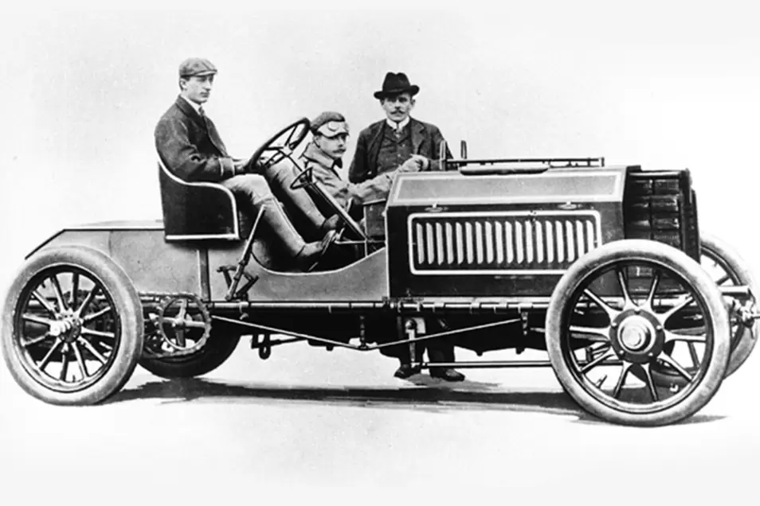
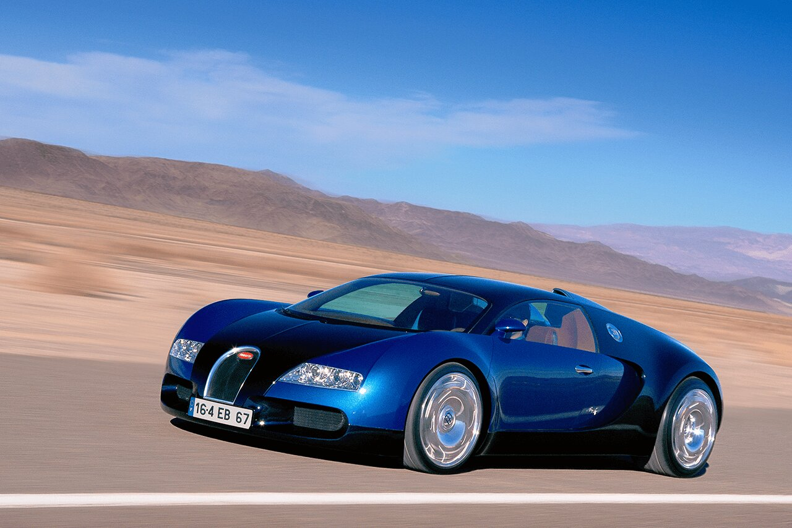
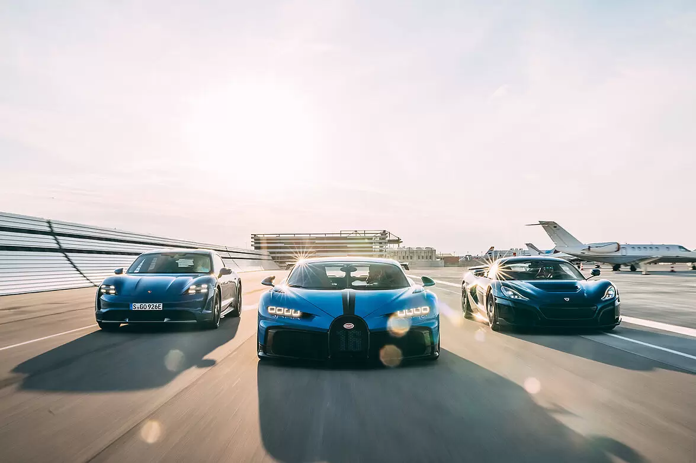

A Bugatti egy olasz, francia illetve német gyökerekkel rendelkező sportautógyártó vállalat.
1881-
röviden
A 20. század első felében körülbelül 8000 járművet állítottak elő, szinte kivétel nélkül a legprecízebb kézi munkával, manufakturális keretek között.
Az eredeti cég a második világháború idején bukott meg sok más akkori luxusmárkához hasonlóan.
Ettore Bugatti fiának, Jeannak a halála is szerepet játszott ebben.
A vállalat pénzügyi nehézségekkel küszködött, utolsó modelljét az 1950-es években mutatta be, majd az 1960-as években repülőgép alkatrészgyártó részlegéért vásárolták fel.
A valaha patinás, különleges és nagy teljesítményű gépkocsikat előállító vállalat ma a Volkswagen Csoport egyik elitmárkája.
1881
Ettore Bugatti születése
Ettore Bugatti (1881–1947) a Bugatti cég legendás alapítója és kora legsikeresebb versenyautóinak és luxusjárműveinek tervezője volt. Mind az autógyártás, mind a motorsport hagyományok egyik fő úttörője volt, és a mai napig híres látnoki terveiről.
1884
Rembrandt Bugatti születése
Rembrandt Bugatti (1884–1916) nemzetközi hírű szobrász, az Art Deco egyik úttörője volt. Művészi munkássága többnyire öntött, bronzból készült állatszobrokból állt. Kivételesen képzett mesterember volt, akinek munkáiból természetes szépség és élénk kifejezési erő áradt.
1856
Carlo Bugatti születése
Carlo Bugatti (1856–1940) nemzetközi hírű, díjnyertes művész, tervező és ezüstműves volt. Bútorai különösen híresek voltak. A szecesszió hatására teljesen egyéni formája, gyakran impozáns méretek és rendkívül kifinomult anyagok felhasználása jellemezte.
1901
Type 2

1901-ben Bugatti kiállította első saját autóját egy milánói nemzetközi kiállításon. Az autót – a Type 2-t – a Gulinelli fivérek segítségével építette meg, és elnyerte a Francia Autóklub díját. Ez a projekt azonban meghiúsult, amikor az egyik Gulinelli testvér meghalt. Végül az autó gyártási engedélyét eladták az elzászi Niederbronnban található De Dietrich cégnek. Mivel Ettore még nem volt 21 éves, a szerződést De Dietrich és Ettore apja között kellett megkötni.
1903
Type 5

A Bugatti által tervezett első versenyautó 1903-ban készült el. A lánchajtású autó a Gulinelli modell továbbfejlesztett változata volt, 12,9 literes lökettérfogattal és csővázas alvázzal a hűtőfolyadék keringtetésére.
Nagy szerződések
1905
Szerződés a Mathisszal
De Dietrich nem helyeselte, hogy Bugatti minden energiáját a versenyautókba fektesse. Ettore főnöke úgy vélte, egyre inkább elhanyagolja a sorozatgyártású autók fejlesztését. Ennek eredményeként felbontották De Dietrich-kel kötött szerződését. Ezt követően a Bugatti új, négyhengeres motorral szerelt autót tervezett Emil Mathisnak Strasbourgban.
1907
Szerződés a Deutz-cal
Ettore Emil Mathisszal is meglehetősen gyorsan összeveszett, és 1906-ban újabb 50 lóerős autót fejlesztett ki, minden szerződéses kötelezettség nélkül. 1907 júliusában felajánlotta a Deutz gázmotorgyárnak. A Deutz licenc alapján gyártotta az autót, Bugatti pedig a kölni gyártási részleg vezetője lett. Ettore az első kis „Pur Sang”-en, a Type 10-en dolgozott a kölni Mühlheimben található otthonának pincéjében.
1912
Type 18
A Type 18-ban négyhengeres, ötliteres motor volt, teljesítménye kb. 100 LE és lánchajtás. A híres francia vadászpilóta, Roland Garros birtokolta az egyik ilyen rendkívül erős versenyautót, amikor közúton kellett utaznia. 1916-ban a szárazföldön ugyanolyan sebességgel tudott haladni, mint a levegőben – 160 km/h körül.
1913
Peugeot Bébé
A Bébé 1913-ban került piacra – a Bugatti által kifejlesztett és a Peugeot licence alapján gyártott autó. A mindössze 850 cm³ lökettérfogatú, négyhengeres kisautó 60 km/órás végsebességet is elérhet. A Bébé hatalmas sikert aratott. Több Bébét gyártottak, mint bármely más Bugatti modellt – 1916-ra több ezer darabot.
1914
Type 13 Brescia
A Type 13 16 szelepes motorját az első világháború előtt fejlesztették ki. A gyártás Molsheimben a háború előtt kezdődött, majd 1919-ben folytatódott, és rendkívül sikeresnek bizonyult. 1926-ig különféle változatokat gyártottak különböző alvázhosszúsággal – a 15-ös, 17-es, 22-es és 23-as típusokat. Az autó a „Brescia” becenevet kapta, miután ott látványosan megnyerte az első négy helyet.
1915
A Bugatti repülőgép hajtóműveket gyárt
Az első világháború alatt a Bugatti számos repülőgép-hajtómű-tervet fejlesztett ki a francia és az amerikai kormány számára. Ezeknek a motoroknak a licencdíja biztosította a Bugatti számára azt a tőkét, amely a háború után Molsheimben folytatni tudja az autógyártást. A termelés nőtt, és az alkalmazottak száma fokozatosan 1000 fölé emelkedett.
2001
A Bugatti elkezdi a Veyron sorozatgyártását
2001-ben a Bugatti bemutatta a Veyron 16.4 tanulmányát a frankfurti IAA-n. A koncepcióautó 1001 LE (736 kW), nyolcliteres lökettérfogattal, négy turbófeltöltővel és 1250 Nm nyomatékkal büszkélkedhet. Még abban az évben elhatározták, hogy a tanulmány alapján elindítják a sorozatgyártást. A gyártási modell ugyanazt a nevet viselte.
2021
Bugatti-rimac Közös Vállalkozás
2021. november 2-án a Bugatti, a Rimac és a Porsche egy új fejezet kezdetét jelentette az autóipar történetében a Bugatti-Rimac vegyesvállalattal. Ahol a Bugatti az örökséget és a karosszériaépítést testesíti meg, a Rimac az innovatív erőt és a műszaki hozzáértést képviseli. A kettő együtt hatalmas erőt jelent az iparágon belül.
